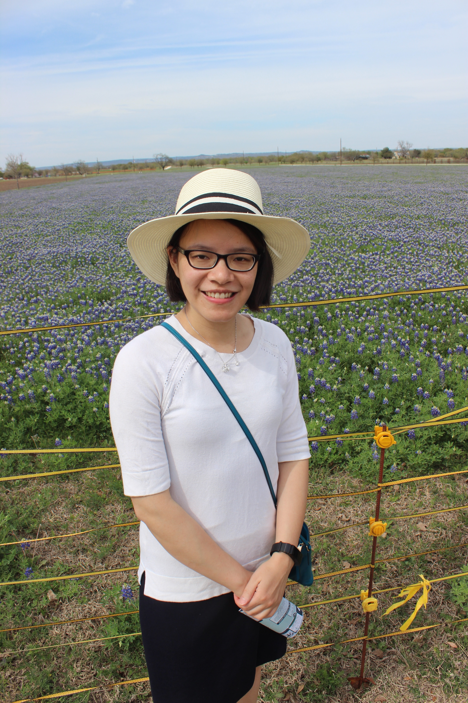

About Me
 I moved from Chicago to Austin three years ago because of work. I enjoy the hot weather in Texas. Without snow, nice weather makes my life much easier. If you ask me how about Texas, I would like to use three things to describe Texas: BBQ, wild flowers and large parking spot.
As a software engineer, performing system test, solving technical problems and reading/analyzing error messages are my daily jobs. Sometimes, work is hard when you expose to an unknown environment or explore new technologies, but I believe doing critical thinking and learning from experienced people would help us to conquer all challenges.